"a method has been developed ... to determine the droplet size distribution of the impinging cloud"
"A Dye-Tracer Technique for Experimentally Obtaining Impingement Characteristics of Arbitrary Bodies and a Method for Determining Droplet Size Distribution" 1
Summary
A pioneering test method is described, and a drop size measurement analysis is proposed.
Key points
- A dye-tracer blotter-paper water drop impingement measurement technique is described.
- An analysis of test results to determine the water spray drop size distribution is described.
- The analysis method accuracy is unknown due to the lack of an independent measurement of drop sizes.
- We see the use of the Icing Research Tunnel for the first time in the Cylinders thread.
Abstract
A dye-tracer technique has been developed whereby the quantity of dyed water collected on a blotter-wrapped body exposed to an air stream containing a dyed-water spray cloud can be colorimetrically determined in order to obtain local collection efficiencies, total collection efficiency, and rearward extent of impingement on the body. In addition, a method has been developed whereby the impingement characteristics obtained experimentally for a body can be related to theoretical impingement data for the same body in order to determine the droplet size distribution of the impinging cloud. Several cylinders, a ribbon, and an aspirating device to measure cloud liquid-water content were used in the studies presented herein for the purpose of evaluating the dye-tracer technique. Although the experimental techniques used in the dye-tracer technique require careful control, the methods presented herein should be applicable for any wind tunnel provided the humidity of the air stream can be maintained near saturation.
Discussion
The spray system
There is a detailed discussion of a dye and blotter paper method of experimentally determining water drop impingement rates.
The (then) NACA Lewis Icing Research Tunnel (IRT) (now NASA Glenn) was used in the test. Cylinder test articles were constructed.
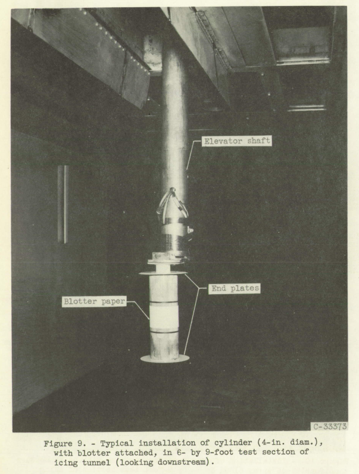
After the blotter paper was exposed to water spray with dye in it, the paper was analyzed for dye concentration.
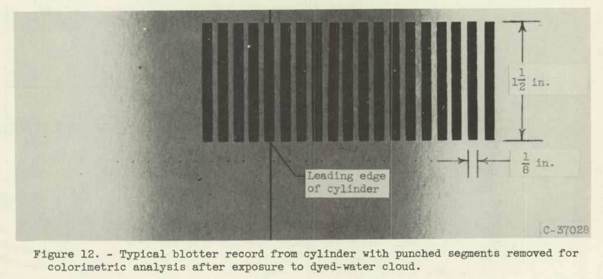
Special nozzles with fast acting solenoids were used, but the spray part was the same as the usual IRT nozzles.
These nozzles are of the same design as those used in the main icing spray system of the icing tunnel and are located in the same low-air-velocity section of the tunnel.
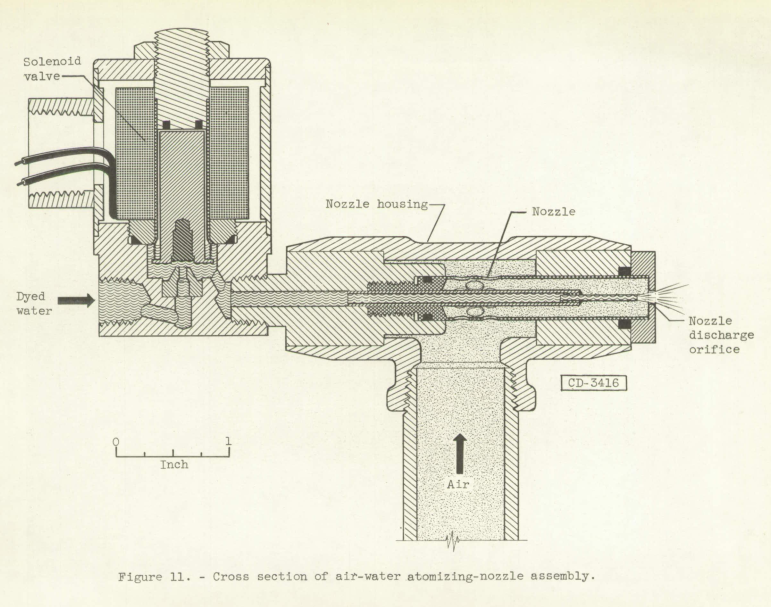
The impingement data
After a chemical analysis of the dye concentration in the blotter paper the local water catch rates were calculated.
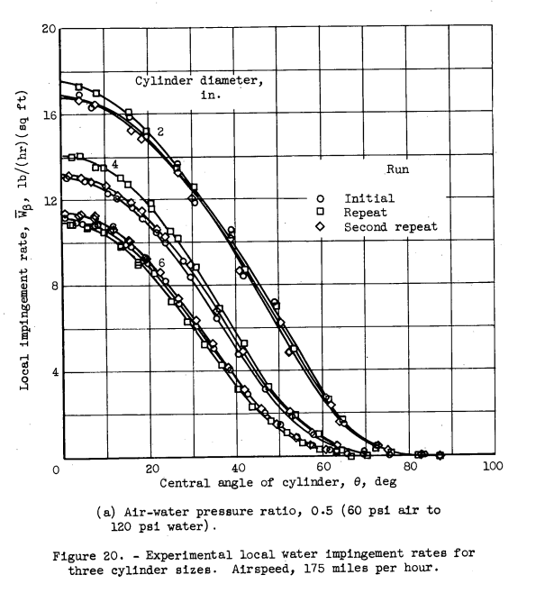
The distribution analysis
The impingement is divided into arbitrary segments, and beta curves corresponding to drop sizes for the impingement limit are constricted and summed to yield an approximate total beta curve. Fractions of total water content for each segment are determined during the process.
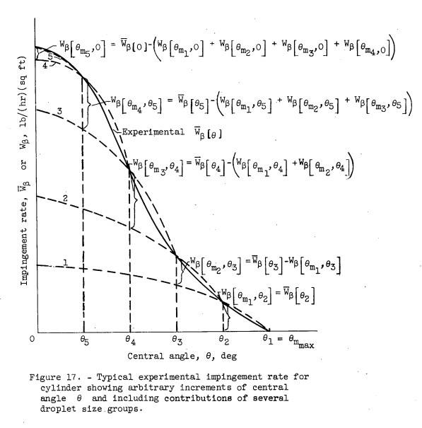
The values from each group or segment are plotted, and a "faired" curve through them is manually produced.
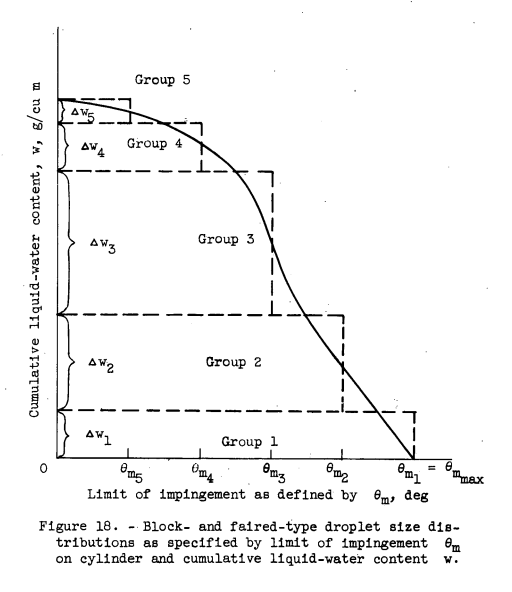
The cylinder angle theta values can be translated into drop impingement limits and plotted. (Note that drop radius "a" is used here, not diameter)
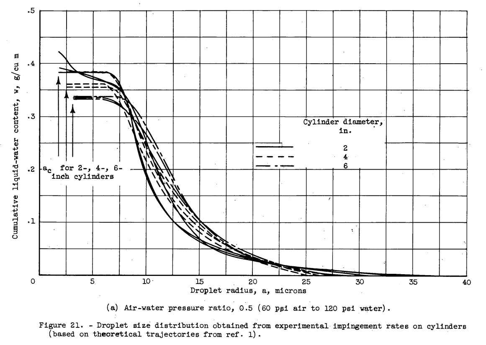
It is not surprising that the curves tend to flat-line at low drop sizes. The drop radii for K=0.125, where impingement would be zero, are noted on the figure as "ac".
The analysis was also conducted using data from Langmuir and Blodgett, shown in Figure 22 below. It is not clear how this was done, as Langmuir and Blodgett did not provide beta curves. I speculate that the Langmuir and Blodgett Em and Theta_max values were used with an assumed cosine relationship as in NACA-TN-2904 2.
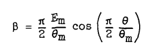
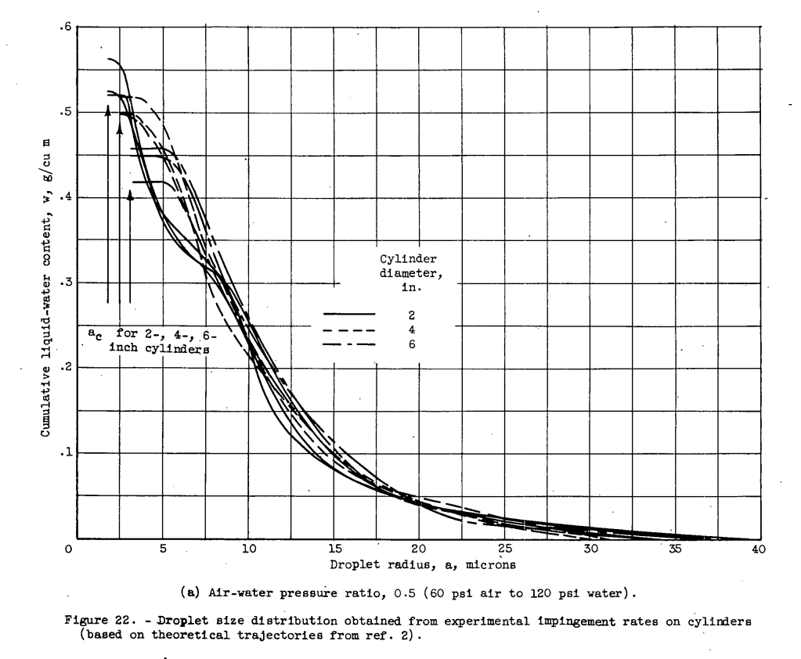
The results from Figure 22 were set aside in favor of the NACA-TN-2904 method results from Figure 21.
The differences noted (between figs. 21 and 22) are again caused by the differences inherent in the theoretical results of references 1 and 2. Because more data points are presented and the accuracy of the data is stated, reference 1 will be used hereinafter rather than reference 2 as a basis for the subsequent results.
The flat results for small drop sizes in Figure 21 led to a re-evaluation:
In obtaining a single curve which is the best representation of the actual droplet size distribution existing in the tunnel for a given set of spray conditions, it is reasonable to use an average of the nine curves (three repeats times three cylinder sizes) in the larger droplet size range where the results from all three cylinder sizes are in reasonable agreement. In the range of the smaller droplet sizes (a < 6 microns, see fig. 21), it appears that the theoretical data are not strictly applicable because a different droplet size distribution curve is obtained for each cylinder size. However, the end point of the droplet size distribution curve (a = 0, w = wt) is single-valued and is specified by the wt values obtained with the aspirating device. The averages (for several repeats) of the total liquid-water content wt obtained with the aspirator are summarized as follows:
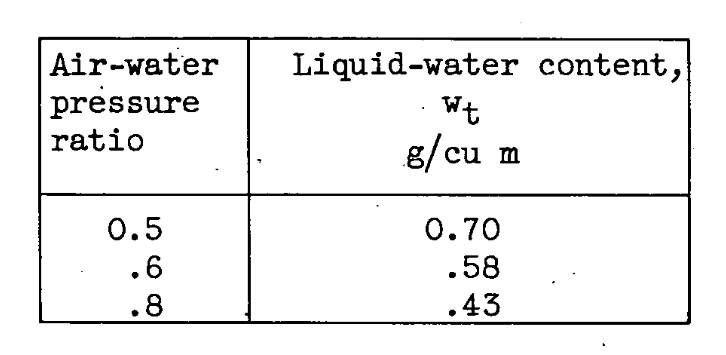
Because of the cylinder-size trend for droplet radii less than approximately 6 microns (fig. 21), a straight line was faired between at 6 microns and the tabulated value of wt for each pressure ratio. The results of this interpretation of the data are shown in figure 23; the reasoning underlying this interpretation is presented in the DISCUSSION section.
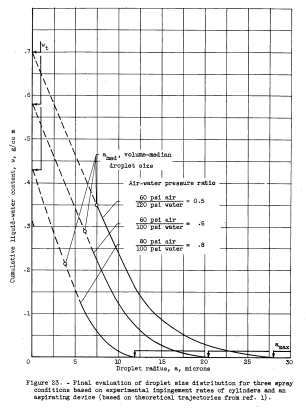
Need an independent measurement of drop sizes
The accuracy of determining droplet size distribution by the use of the dye-tracer technique together with theoretical trajectory data could be definitely established if an accurate instrument were available to measure directly a representative sample of all droplet sizes present in the experimental spray cloud. The present state of development of the camera (ref. 16) or the oiled-slide technique (ref. 17) for measuring droplet size is not considered so adequate a means for determining droplet size as the indirect method herein described.
Unfortunately, we cannot know the accuracy of the method with the data in NACA-TN-3338, as there was not an independent measurement of the drop size distribution. Figure 23 frankly does not look like a natural or artificially produced drop size spectrum that I have seen (they usually have an "S" shape, not a steep slope at one end), but perhaps the nozzles used in the test produced that size characteristic. I think that it is more likely that the aspirating device used to measure LWC was not very accurate, resulting in an artificially high left end point.
I think that here NACA-TN-3338 missed an opportunity. The oiled-slide measurement technique was studied in detail by Langmuir 3, and the potential shortcoming of the method noted. However, the technique can yield accurate results, if care is taken in both the sample collection and the processing of the samples. [I have used the oiled-slide method and other drop sizing instruments in natural icing flight tests].
Langmuir chose to use oiled-slide data to develop the Langmuir distributions,
see "A Langmuir B drop size distribution is (almost) a normal distribution".
And NACA-TN-3338 also chose to make comparisons to a Langmuir distribution.
Icing Research Tunnel
I note how casually the (then) NACA Icing Research Tunnel (IRT) is mentioned (now the NASA Glenn IRT).
The experimental studies of droplet impingement characteristics on cylinders were conducted in the 6- by 9-foot-test section of the NACA icing tunnel.
There is no citation for the tunnel and its capabilities. (In contrast, there are at several publications in the calibration of the IRT). The ASME recognized the IRT as an "International Historic Mechanical Engineering Landmark" in 1987 4. Readers may be interested in "We Freeze to Please": A History of NASA's Icing Research Tunnel and the Quest for Flight Safety.
The drop measurement technique described here may not be completely useful for the calibration of the IRT, as even if the spray parts of the nozzles were similar, installation details can cause differences in the spray cloud. And NACA-TN-3338 reported three candidate distributions, without data to select which is the best one.
The IRT merits further review (see the Icing Wind Tunnel Test Thread). For now, I will note that calibration of the tunnel in the NACA era was a challenge, in part due to limited instrumentation. Author von Glahn of NACA-TN-3338 was an author of NACA-RM-E51B12 5, which noted the use of multicylinders in the calibration of the icing tunnel:
Cloud droplet sizes and liquid-water contents in the tunnel were measured by the rotating-multicylinder method and were in the range of natural icing conditions.
Contrast that to the detail in a post-NACA calibration of the IRT 6.
Conclusions
A technique for experimentally determining the impingement characteristics of an arbitrary body and a method whereby the droplet size spectrum of the spray cloud can be determined from the experimental impingement on a body for which the theoretical trajectories are known have been developed. These developments present an opportunity to study experimentally the impingement characteristics of other shapes such as airfoils, radomes, inlet cowlings, and asymmetrical bodies. Although analytical trajectory studies can be made for these various bodies, the problems associated with the determination of the flow fields and consequent droplet trajectories often prove difficult and tedious. Use of the dye-tracer technique for arbitrary shapes in any suitable testing facility would proceed as described herein for cylinders: The droplet size distribution in the spray cloud would be established using bodies for which the theoretical impingement characteristics are known, while an aspirating device similar to the one described (appendix B) may be used for the determination of total liquid-water content. The unknown body with blotter then would be exposed and analyzed for local rates of water impingement, including the determination of the maximum extent or limit of impingement, and integrated for total collection efficiency. Impingement limits and collection efficiency are often presented.
...
The method of calculation is a step-wise approximation and may be derived by methods similar to those used for obtaining the droplet distribution in the section METHOD OF DETERMINING DROPLET-SIZE DISTRIBUTION. The results of such an analysis would be useful in (1) calculating the impingement rates for a body in a cloud of arbitrary droplet size distribution, and (2) determining whether the assumptions used in theoretical trajectory calculations are valid. This determination requires an independent means (reliable instrument) for measuring the droplet size distribution.
The accuracy of the various drop distributions shown above are unknown, due to the lack of an independent comparison measurement. I do not know of data from the NACA era that could clarify the accuracy. We will look at a comparison of post-NACA data in the Conclusions of the Cylinder Thread.
Citations
NACA-TN-3338 cites 13 publications:
- Brun, Rinaldo J., and Mergler, Harry W.: Impingement of Water Droplets on a Cylinder in an Incompressible Flow Field and Evaluation of Rotating Multicylinder Method for Measurement of Droplet-Size Distribution, Volume-Median Droplet Size, and Liquid-Water Content in Clouds. NACA-TN-2904, 1953 ntrs.nasa.gov.
- Langmuir, Irving, and Blodgett, Katherine B.: A Mathematical Investigation of Water Droplet Trajectories. Tech. Rep. No. 5418, Air Materiel Command, AAF, Feb. 19, 1946. (Contract No. W-33-038-ac-9151 with General Electric Co.)
- Tribus, Myron: "Modern Icing Technology" 1952. lib.umich.edu
- Bergrun, Norman R.: A Method for Numerically Calculating the Area and Distribution of Water Impingement on the Leading Edge of an Airfoil in a Cloud. NACA-TN-1397, 1947 ntrs.nasa.gov.
- Brun, Rinaldo J., Gallagher, Helen M., and Vogt, Dorothea E.: Impingement of Water Droplets on NACA 65A004 Airfoil and Effect of Change in Airfoil Thickness from 12 to 4 Percent at 4° Angle of Attack. NACA-TN-3047, 1953.
- Brun, Rinaldo J., Gallagher, Helen M., and Vogt, Dorothea E.: Impingement of Water Droplets on NACA 651-208 and 651-212 Airfoils at 4° Angle of Attack. NACA-TN-2952, 1953.
- Guibert, A. G., Janssen, E., and Robbins, W. M.: Determination of Rate, Area, and Distribution of Impingement of Waterdrops on Various Airfoils from Trajectories Obtained on the Differential Analyzer. NACA-RM-9A05, 1949.
- Brun, Rinaldo J., Serafini, John S., and Gallagher, Helen M.: Impingement of Cloud Droplets on Aerodynamic Bodies as Affected by Compressibility of Air Flow Around the Body. NACA-TN-2903, 1953.
- Serafini, John S.: Impingement of Water Droplets on Wedges and Double- Wedge Airfoils at Supersonic Speeds. NACA-TR-1159, 1954. (Supersedes NACA-TN-2971.)
- Brun, Rinaldo J., and Dorsch, Robert G.: Impingement of Water Droplets on an Ellipsoid with Fineness Ratio 10 in Axisymmetric Flow. NACA-TN-3147, 1954. ntrs.nasa.gov
- Dorsch, Robert G., Brun, Rinaldo J., and Gregg, John L.: Impingement of Water Droplets on an Ellipsoid with Fineness Ratio 5 in Axisymmetric Flow. NACA-TN-3099, 1954. ntrs.nasa.gov
- Bergrun, Norman R.: An Empirical Method Permitting Rapid Determination of the Area, Rate, and Distribution of Water-Drop Impingement on an Airfoil of Arbitrary Section at Subsonic Speeds. NACA-TN-2476, 1951.
- Langmuir, Irving: Super-Cooled Water Droplets in Rising Currents of Cold Saturated Air, Pt. I. Res. Lab., General Electric Co., Oct. 1943-Aug. 1944. (Army Contract W-33-106-sc-65.)
In the NACA Icing Publication Database 7, NACA-TN-3338 is cited 10 times:
- Dorsch, Robert G., Saper, Paul G., and Kadow, Charles F.: Impingement of Water Droplets on a Sphere. NACA-TN-3587, 1955. ntrs.nasa.gov
- Bowden, Dean T.: Effect of Pneumatic De-Icers and Ice Formations on Aerodynamic Characteristics of an Airfoil. NACA-TN-3564, 1956. ntrs.nasa.gov
- Gelder, Thomas F., Smyers, William H., Jr., and von Glahn, Uwe H.: Experimental Droplet Impingement on Several Two-Dimensional Airfoils with Thickness Ratios of 6 to 16 Percent. NACA-TN-3839, 1956.
- Hacker, Paul T., Saper, Paul G., and Kadow, Charles F.: Impingement of Droplets in 60° Elbows with Potential Flow. NACA-TN-3770, 1956.
- Lewis, William, and Brun, Rinaldo J.: Impingement of Water Droplets on a Rectangular Half Body in a Two-Dimensional Incompressible Flow Field. NACA-TN-3658, 1956. ntrs.nasa.gov
- von Glahn, Uwe H.: Use of Truncated Flapped Airfoils for Impingement and Icing Tests of Full-Scale Leading-Edge Sections. NACA-RM-E56E11, 1956. ntrs.nasa.gov
- Brun, Rinaldo J., and Vogt, Dorothea E.: Impingement of Cloud Droplets on 36_5-Percent-Thick Joukowski Airfoil at Zero Angle of Attack and Discussion of Use as Cloud Measuring Instrument in Dye-Tracer Technique. NACA-TN-4035, 1957.
- Lewis, James P., and Ruggeri, Robert S.: Experimental Droplet Impingement on Four Bodies of Revolution. NACA-TN-4092, 1957.
- Gelder, Thomas F.: Droplet Impingement and Ingestion by Supersonic Nose Inlet in Subsonic Tunnel Conditions. NACA-TN-4268, 1958. ntrs.nasa.gov
- Gray, Vernon H.: Correlations Among Ice Measurements, Impingement Rates, Icing Conditions and Drag Coefficients for an Unswept NACA 65A004 Airfoil. NACA-TN-4151, 1958.
An online search 8 found 26 citations of NACA-TN-3338.
Related
The dye-tracer technique will be used in the post-NACA era, see NACA-CR-4257 9. That data did have an independent measurement of the drop size distribution.
Notes
-
von Glahn, Uwe H., Gelder, Thomas F., and Smyers, William H., Jr.: A Dye-Tracer Technique for Experimentally Obtaining Impingement Characteristics of Arbitrary Bodies and a Method for Determining Droplet Size Distribution. NACA-TN-3338, 1955. ntrs.nasa.gov ↩
-
Brun, Rinaldo J., and Mergler, Harry W.: Impingement of Water Droplets on a Cylinder in an Incompressible Flow Field and Evaluation of Rotating Multicylinder Method for Measurement of Droplet-Size Distribution, Volume-Median Droplet Size, and Liquid-Water Content in Clouds. NACA-TN-2904, 1953 ntrs.nasa.gov. ↩
-
Langmuir, Irving: Super-Cooled Water Droplets in Rising Currents of Cold Saturated Air, Pt. I. Res. Lab., General Electric Co., Oct. 1943-Aug. 1944. (Army Contract W-33-106-sc-65.) ↩
-
Anon.: "An International Historic Mechanical Engineering Landmark ICING RESEARCH TUNNEL", ASME, May, 1987. asme.org ↩
-
von Glahn, Uwe H., Callaghan, Edmund E., and Gray, Vernon H.: NACA Investigations of Icing-Protection Systems for Turbojet-Engine Installations. NACA-RM-E51B12, 1951. ntrs.nasa.gov ↩
-
Ide, Robert F., Oldenberg, John R.: "Icing Cloud Calibration of the NASA Glenn Icing Research Tunnel", NASA/TM—2001-210689. dtic.mil ↩
-
Papadakis, M., Elangonan, R., Freund, Jr., G.A., Breer, M., Zumwalt, G.W. and Whitmer, L.: "An Experimental Method for Measuring Water Droplet Impingement Efficiency on Two- and Three- Dimensional Bodies," NASA-CR-4257, Nov. 1989. www.wichita.edu ↩